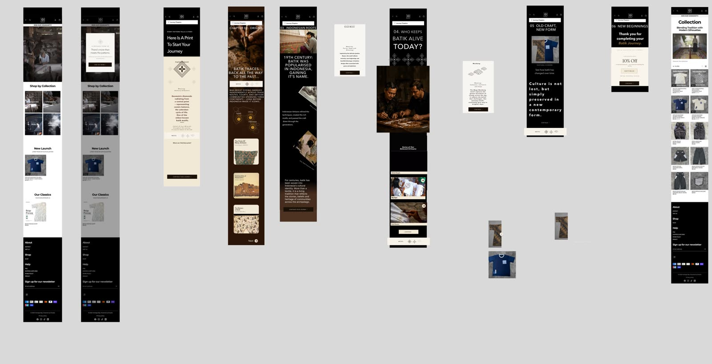

The challenge
Many younger consumers know little about Singapore batik and see handcrafted pieces as expensive.
Without understanding the heritage and craftsmanship behind them, they lack confidence buying authentic batik.
A storytelling website that takes users through six chapters of batik history and craft — collecting motif prints along the way — before they reach the shop.

From the problem they found to the experience they designed.
Many younger consumers know little about Singapore batik and see handcrafted pieces as expensive.
Without understanding the heritage and craftsmanship behind them, they lack confidence buying authentic batik.
Instead of opening with a catalogue, the website opens with a story. Six chapters move from the meaning of motifs, through batik’s origins and the artisans who preserved it, to the artisans working today and how traditional batik becomes contemporary fashion.
Each chapter unlocks a Heritage Bay motif print. Completing the journey earns an exclusive discount that leads naturally into the collection.
The user’s path through the experience.
Select an image to enlarge it. The full files are under Files.
Download the student’s Figma source file (52.8 MB), then import it into Figma to explore the screens and interactions.
Download Figma fileAnonymised student deliverables.
Examples are references, not templates or model answers. Summaries are drafted from the student’s submission.